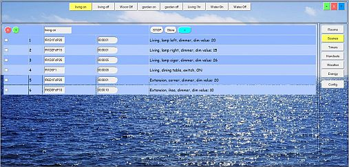
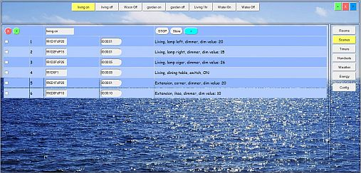
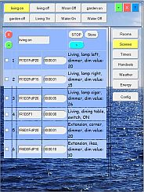
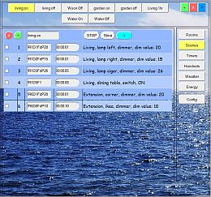
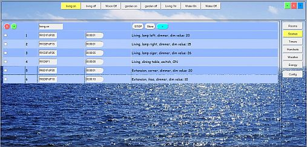

This page gives more background on the LamPI GUI functions and how to start the LamPI system the first time.
The LamPI screen is devided in the following regions:
In the remainder of the documentation pages, we will refer to these sections if we want to explain in more detail the various functions of LamPI.
There are scaling and non-scaling skins available for LamPI. For small mobile devices it is best to use a skin which has a compact layout and is specially developed for mobile devices. For regular PC screens or tablets with large resolution screens there are skins that will automatically reorganize parts of the screen so that its content will be accessible.

The scaling skins adapt to the width of the screen (or window) automatically. These skins start with "scale-" in their filename